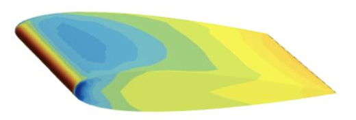
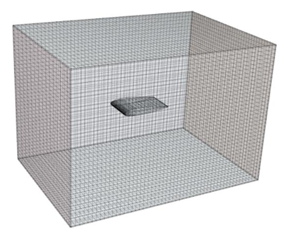
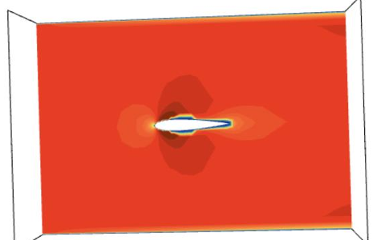

Setting up a CFD case
Going through every step of a simulation: geometry, meshing, physics, solving and post-processing.
SH. 03 · SCHOOL PROJECT · 3RD YEAR · 2025
Numerically reproducing a wind tunnel experiment in STAR-CCM+ to study the flow and aerodynamic loads around two reference geometries.

01 · THE TOPIC
The goal of this lab: reproduce in STAR-CCM+ the exact conditions of a wind tunnel test (geometry, dimensions, speeds), so that the simulation can be compared with experimental measurements.
Two cases were studied: a cylinder placed in the flow at several speeds, then a NACA 0015 airfoil, whose angle of attack was increased up to stall.
02 · THE APPROACH
Build the fluid domain to the dimensions of the test section and subtract the body under study.
Define the regions and boundary conditions, then generate and check the domain mesh.
Incompressible, steady and turbulent airflow, with the k-ε turbulence model.
Velocity and pressure fields, vectors, convergence monitoring and aerodynamic coefficients.
03 · IN PICTURES


04 · SKILLS GAINED
Going through every step of a simulation: geometry, meshing, physics, solving and post-processing.
Translating a real experiment into a numerical model: inlet, outlet, walls and choice of physical assumptions.
Configuring a mesher and checking mesh quality before running the calculation.
Monitoring residuals and coefficients over the iterations to judge how reliable a calculation is.
Linking velocity and pressure fields to lift and drag, and studying the effect of the angle of attack.
Keeping in mind that a simulation must always be compared with experiment or theory to be validated.
05 · SOFTWARE USED
06 · CONCLUSION
This project was my first real hands-on experience with CFD: understanding every step of a calculation, from geometry to the physical interpretation of the results.
These foundations then served me directly during my 4th-year internship, where I used STAR-CCM+ on a much more complex case: the downwash of a helicopter rotor.